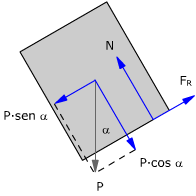
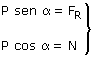
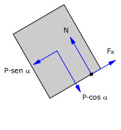
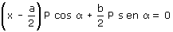
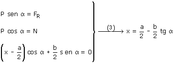
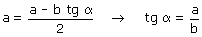

Fuerzas
 |
Equilibrio de traslación:  |
Momentos:
El punto de aplicación de la normal está a distancia x (Incógnita) del borde izquierdo del bloque
|
 |
Equilibrio de rotación:

Combinando las dos condiciones de equilibrio resulta un sistema

Al aumentar α disminuirá x y el punto de aplicación de la normal se irá aproximando al extremo iz-quierdo de la base del bloque. El caso crítico corresponderá a: x = 0
